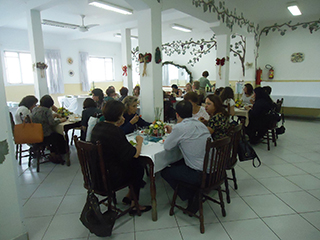
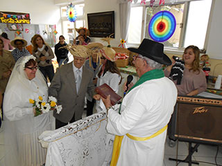

Como forma de agradecer por todo o empenho, carinho e dedicação neste ano que termina, promovemos, no último dia 27 de novembro,
uma deliciosa Ceia de Natal para os nossos voluntários. O almoço reuniu cerca de 50 pessoas e foi animado pela apresentação
do grupo da Casa de Cultura de Lugar Nenhum.
Atualmente, O Asilo conta com aproximadamente 100 voluntários, sendo 75 frequentadores diretos da Associação. Confira
as fotos

Projeto Velho Amigo
O Asilo contou com Regininha de Moraes, do projeto Velho Amigo, como madrinha da Associação no lançamento do Anjos da
Moda, que aconteceu em 24 de outubro, no Espaço Araguari. O Anjos da Moda é uma linha exclusiva de camisetas, cuja
idealização e criação são assinadas pela estilista Cynthia Hayashi, da CYN.
O Asilo completa 100 anos de prestação de serviço aos idosos
A Associação Beneficente “O Asilo” de Amparo aos Idosos completou 100 anos em 2012. As comemorações se encerram em março
de 2013, com evento dirigido à comunidade acadêmica e com o lançamento do livro sobre a história da Associação.
Arraial da “O Asilo”
Pipoca, comidas típicas, pescaria, música ao vivo e quadrilha marcaram o Arraial da “O Asilo” 2013. A festa aconteceu
no dia 26 de junho e contou com a presença dos idosos da entidade, que puderam se divertir e dançar ao som de músicas
sertanejas, acompanhar o casamento da quadrilha, provar quitutes juninos especiais e participar de brincadeiras como
a pescaria e boca do palhaço.
A comemoração aconteceu no salão central da entidade e durou cerca de duas horas, contando com a participação de voluntários
e parentes dos idosos.

Comemoração do Dia das Mães na O Asilo tem presença de familiares e música ao vivo
No dia 13 de maio, para comemorar o Dia das Mães, "O Asilo" reuniu familiares, funcionários e voluntários para um café
da manhã especial dedicado as mães e idosos assistidos pela entidade. Na ocasião, houve a apresentação de música
ao vivo, e todos os presentes puderam comemorar a data em grande estilo, ao lado dos parentes e pessoas queridas.
Espetáculo no Theatro Municipal marca o centenário com másica e homenagens
“Um show de amor e solidariedade” – este foi o título do espetáculo musical que a A “Asilo” promoveu para convidados
e o público em geral. Foram 1400 pessoas que foram ao Municipal ver de perto as canções escolhidas a dedo por Agnaldo
Rayol, Toquinho, as cantoras Badi Assad e Anna Setton. O concerto teve a participação do pianista e compositor André
Mehmari e a abertura oficial foi realizada pela pianista Juliana D´Agostini, com excelente interpretação da Fantasia
sobre o Hino Nacional de Gottschalk. Na abertura do show comemorativo do centenário da instituição, a presidente
da entidade, Elizabeth Zogbi, fez um pronunciamento sobre a trajetória e a comemoração dos 100 anos. Depois de se
apresentarem uma única vez juntos, ainda na década de 1960, Toquinho e Agnaldo Rayol dividiram o palco, mesclando
suas belas vozes.
Os cantores selecionaram uma série de canções de vários ritmos e épocas, entre clássicos da MPB e grandes surpresas. Agnaldo
Rayol interpretou canções como “Estrada do sol”, “Ave Maria”, “Carinhoso”, entre outras. Toquinho trouxe ao público
canções como “A casa”, “O caderno”, “Aquarela”, “Estado do Sol”, “Berimbau”, “Tarde em Itapuã”, entre outras. Toquinho
também dividiu sua voz no palco com as talentosas artistas Anna Setton e Badi Assad.
No encerramento do espetáculo, todos se reuniram e interpretaram um grande sucesso de Tom Jobim e Vinicius de Moraes: “Se
todos fossem iguais a você”.